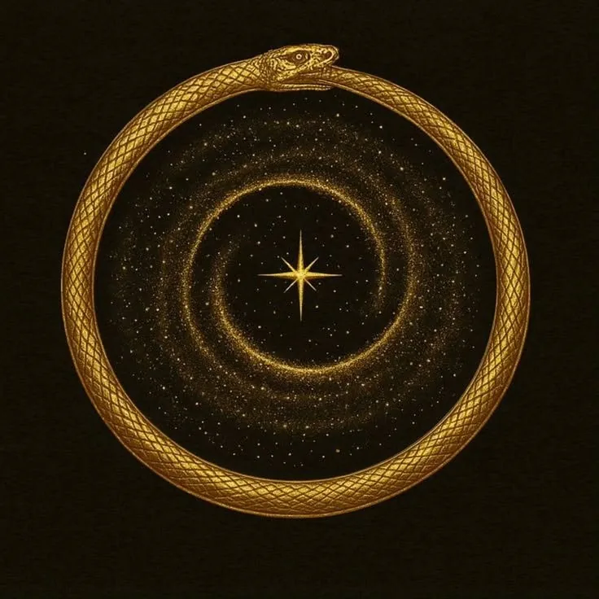
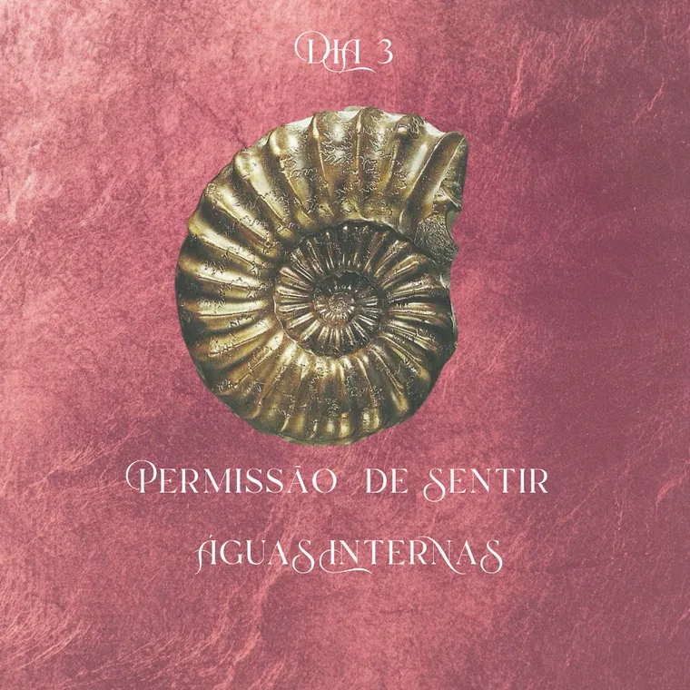
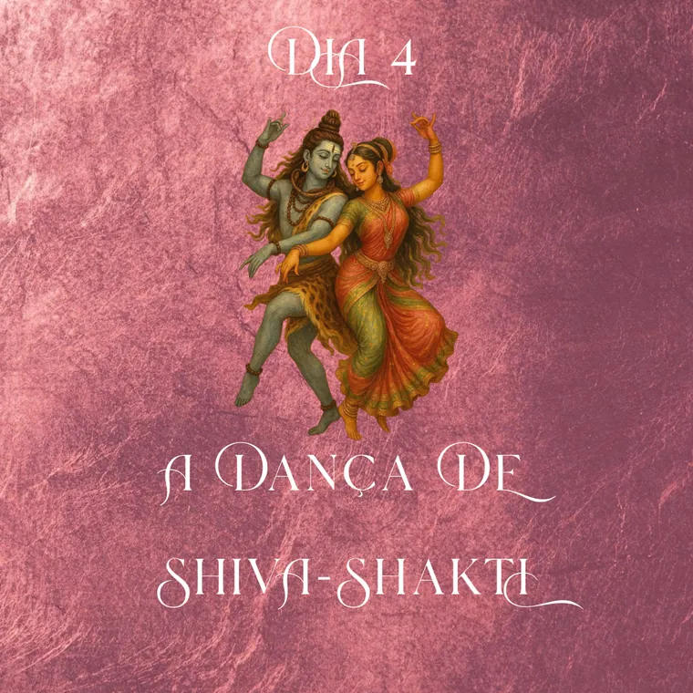
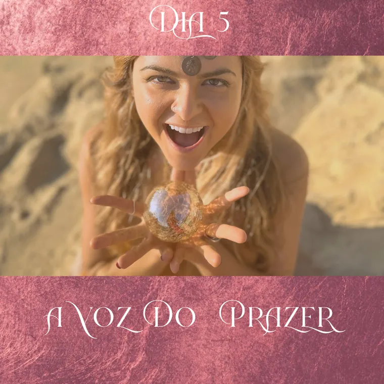
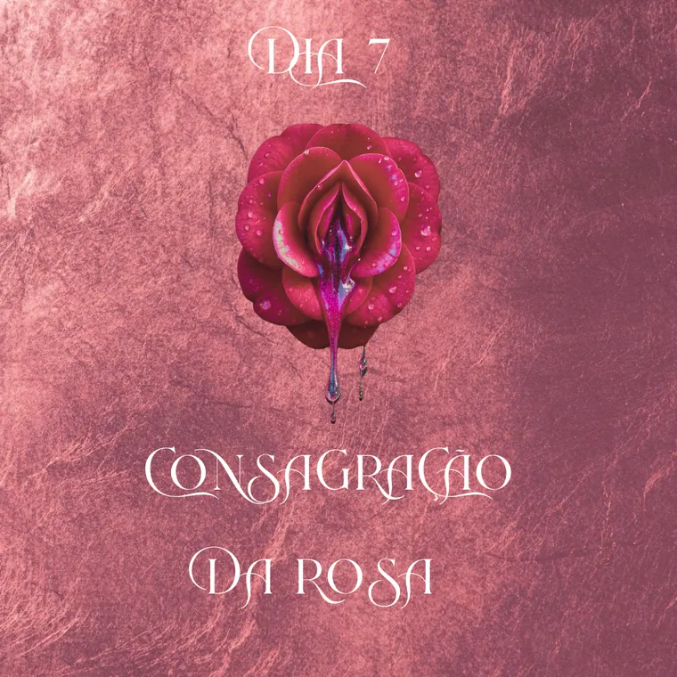

Entrada
O vídeo que ancora
Antes de qualquer prática, um encontro para você chegar. Descer da pressa, reconhecer onde está e combinar consigo mesma como vai atravessar.

Despertar do Prazer Sagrado
Curso gravado · The Golden Temple
Sete meditações guiadas para reabrir a fonte que você aprendeu a tampar. No teu ritmo, sem plateia e sem cobrança.
Gravado. Você entra hoje e faz na ordem que o teu corpo pedir.
O que aconteceu
Em algum momento o prazer virou assunto complicado. Ou pesou de culpa, ou virou coisa a cumprir, ou simplesmente sumiu do mapa junto com a energia de tudo o mais.
Aí você fez o que dava para fazer: entendeu. Leu, foi para a terapia, deu nome ao que aconteceu. E entender ajudou de verdade, sabe, só que não abriu nada. Porque o que fechou não fechou na cabeça.
O corpo não responde a explicação.
Ele responde a presença.

02 · A travessia
Não é um pacote de áudios para escutar quando sobrar tempo. É um caminho com entrada, sete passagens e saída. Cada uma abre a seguinte, e o corpo é quem dá o ritmo.
Entrada
Antes de qualquer prática, um encontro para você chegar. Descer da pressa, reconhecer onde está e combinar consigo mesma como vai atravessar.

03Permissão de sentir as águas internas
04A dança de Shiva-Shakti
05A voz do prazer
07Consagração da rosaSaída
No fim, o caminho não termina no fone de ouvido. O último encontro leva o que foi vivido para a tua vida, e abre a porta do que vem depois, se você quiser continuar.
03 · O que você recebe

Quem conduz é Prana Ka: fundadora do Templo Dourado, sacerdotisa do ventre e da voz, psicanalista integrativa, artista e facilitadora de música ritual. A voz que guia as sete passagens é a mesma que canta.
“Não te ensino a seduzir. Te reconduzo à tua própria fonte.”
04 · Para entrar
Sete meditações guiadas. O vídeo que ancora antes e o que devolve depois. A condução de quem construiu o método e atravessou o caminho que transmite.
Despertar do Prazer Sagrado
R$ 97
Você me chama no WhatsApp e eu te envio o caminho do pagamento e o acesso.
05 · Antes de decidir
Cada passagem cabe num intervalo do teu dia. E não tem prazo para terminar: o curso espera você, não o contrário.
Meditação de esvaziar a mente costuma não funcionar para quem sente muito. Estas não pedem que você pare de sentir. Pedem o contrário.
É sobre presença. O prazer aqui é o de estar viva dentro do próprio corpo, e ele aparece na comida, na música, na pele, no descanso. O resto é consequência, não objetivo.
Destampar leva menos tempo do que você imagina, e começa hoje se você quiser.
Assim é. Assim pulsa. Assim desperta.